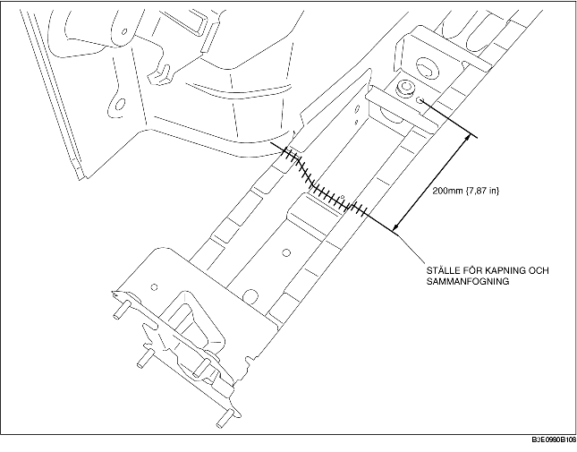

1. Kapa den nya delen och den befintliga delen vid stället för kapning och sammanfogning och fasa kanterna.
2. För att kapa och sammanfoga den nya delen, kapa enligt figuren nedan och fasa ställena för kapning och sammanfogning på de nya delarna.
3. Vid montering av nya delar, provmontera nya och befintliga delar och mät och justera sedan karossen så att den stämmer enligt ritningen.
4. Montera de nya delarna tillfälligt för att säkerställa att de passar.
